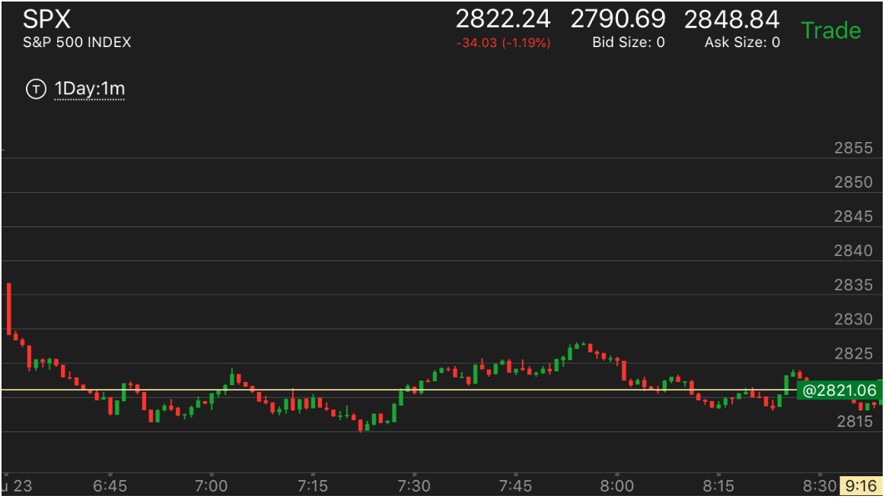
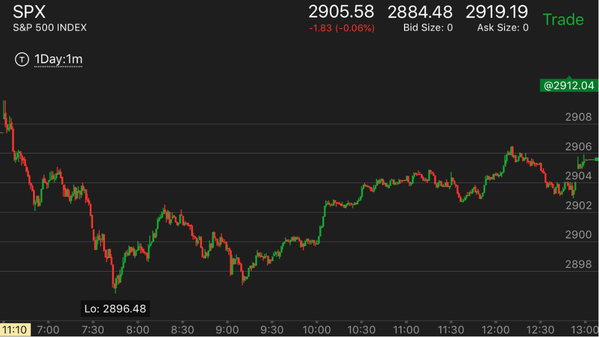
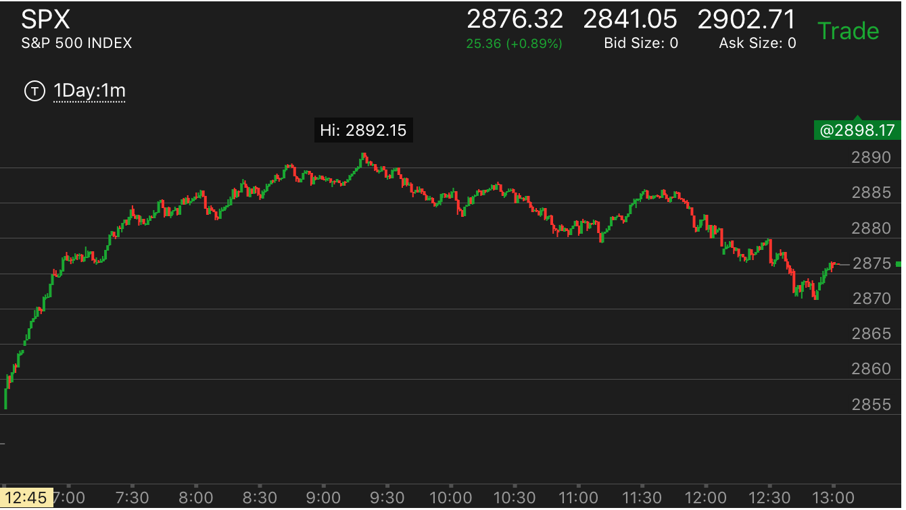

开盘后连续上涨或下跌建立的真空，填补位置研究
- 有时候会完全反转，超过开盘的位置。
- 有时候，立刻开盘很远，反向走势很弱，只能填补一部分真空。这个取决于反向走势的形状和幅度
- 要记住这个不一定会发生。也许时间根本不够。
- 但是如果一旦反转，就要寻找开盘的可能的真空点，它常常一直到了那里才再次反转。
- 股市运动的机制决定了，它如果要涨，就会运动出来涨的样子，如果要跌，就会运动出来跌的样子。真空不必填补。
所以不能去赚回调的钱，应该尽早加入一个走势。不要怕它回调。
开盘后不断下跌，转折后再次下跌
直到收盘才填补开盘出现的真空
开盘后连续下跌形成的真空
开盘后连续下跌形成的真空
TOP

图示：开盘后，第一个bar很大，然后接着两很小的bar，然后出现一个比较大的bar。
这时，如果走势允许，那么第一个bar建立的真空不会被填补。两个很小的bar也不会被填补。真空位置在那个比较大的bar。
位置在2828的地方。7：55也是到达了这个地方后，开始下跌。
开盘后不断下跌，转折后再次下跌
TOP

图示：开盘后不断下跌。5分钟后，出现第一个转折，然后继续跌。这个没有填补真空后，继续跌。
可以看到，它直到收盘才开始试图填补这个真空。但是也没有完成。

图示：开盘冲高，然后不断下跌。直到6：55，才开始反弹，然后再次走平，然后下跌。可以看到，未来它的走势就是填补了
这个空。而对更高的真空则没有填补。
直到收盘才填补开盘出现的真空
TOP

图示:开盘的时候，在6：50出现了真空，大约在2872附近。但是它仍然处于升势，也不一定非要填补真空不可。
因为这个真空非常的小。直到中间出现了顶部加速走势，它才反转，最后收盘的时候，才填补这个真空。可以利用这个真空来估计它反转后下跌的幅度。